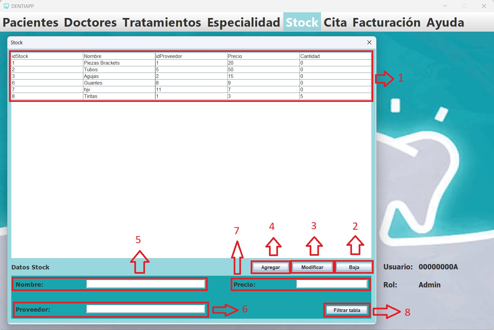

Esta es la página de Gestión de tratamietos. A ella tiene acceso el Administrador, quien podrá visualizarla e interactuar con ella.
En esta página, dicho usuario podrá ver la tabla de Tratamientos. Además, podrá
interactuar con la base de datos agregando nuevos tratamientos, eliminando los ya existentes o modificando los valores de estos.
También se podrá realizar una búsqueda específica de un Tratamiento en concreto mediante el botón de filtrar tabla.
A continuación, se mostrará el diseño de nuestra interfaz, señalizando y explicando la funcionalidad de los distintos
elementos destacables:

Listado de elementos:
-
Tabla:Está conectada a la base de datos "Tratamiento", y nos permite visualizar el
contenido de esta. Presenta una funcionalidad especial al hacer doble click sobre una de sus filas, rellenando los cuadros
de texto de la parte inferior con el contenido del Tratamiento seleccionado.
-
Botón "Baja":Este botón nos permite eliminar un tratamiento de la tabla, realizando al mismo
tiempo una consulta DELETE sobre la tabla de la base de datos. Para eliminar un tratamiento, primero se deberá seleccionar
haciendo doble click sobre él en la tabla. Acto seguido, se pulsa este botón y el tratamiento se eliminará.
-
Botón "Modificar":Sirve para modificar los datos de un tratamiento de la base de datos
mediante una consulta UPDATE. Para ello, seleccionaremos dicho tratamiento haciendo doble click sobre él.
Después, usando los cuadros de texto en los que se posicionan los datos, cambiaremos la información a nuestro placer.
Por último, se pulsará sobre el botón y se habrá modificado la base de datos con éxito.
-
Botón "Agregar":Nos permitirá insertar tratamientos en la base de datos de forma cómoda, realizando una consulta INSERT.
Simplemente se deben rellenar los datos en los cuadros de texto, pulsar el botón, y el nuevo tratamiento se habrá
introducido satisfactoriamente en la base de datos.
-
Cuadro de texto "Nombre": En él se mostrará o se escribirá el nombre del tratamiento con el que
queramos trabajar.
-
Menu desplegable "Especialidad": En él se mostrará el nombre de las especialidades disponibles para seleccionar con el que
queramos trabajar.
-
Cuadro de texto "Precio": En él se mostrará o se escribirá el precio del tratamiento con el que
queramos trabajar.
-
Botón "Filtrar tabla":Este botón nos permitirá buscar un tratamiento específico de la tabla, en
el caso de que queramos hacer una comprobación y nuestra tabla contenga muchos elementos. Para hacer uso de él, primero
pulsamos sobre él y se nos desplegará un cuadro de texto en el que tendremos que introducir el trataminto que queremos
buscar, escribiéndo su nombre como condición de búsqueda. Al darle a confirmar, la tabla se actualizará mostrando únicamente
el tratamiento cuyo nombre coincida con el introducido.